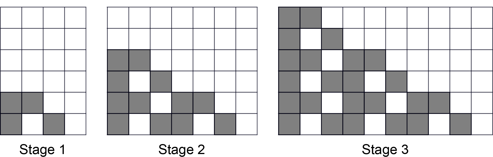

Problem of the Week
Problem B
Elsa’s Pattern
Elsa has moved to the Kingdom of Summer and misses the beautiful frosty patterns of her icy homeland. She has decided to use a computer program and her printer to create some interesting snowflakes that she can keep all year long.
Below are the first three sizes of snowflakes she has created. She starts with the pattern in Stage 1. Stage 2 was created by adding 2 copies of the original pattern to the Stage 1 pattern. Stage 3 was created by adding 3 copies of the original pattern to the Stage 2 pattern. Stage 4 would be created by adding 4 copies of the original pattern to the Stage 3 pattern, and so on.

Using grid paper, draw Elsa’s design for Stages 4 and 5. If you were to continue the pattern to further stages, would a stage ever have the same width and height?
Complete the table below by entering how many grey and white squares Elsa has used at each stage, and calculating the ratio of grey to white squares. A white square must be within the pattern. That is, it must share a side with at least three grey squares.
| Stage | Grey Squares | White Squares | Ration of Grey to White Squares |
| 1 | 4 | 1 | \(4:1\) |
| 2 | |||
| 3 | |||
| 4 | |||
| 5 |
Using the table, how can you calculate the number of grey and white squares using only the stage number? Use your method to calculate the number of grey and white squares in Stage 6.
Strand: Patterning and Algebra